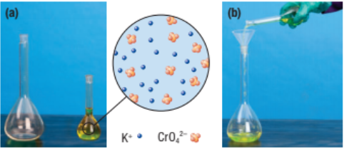
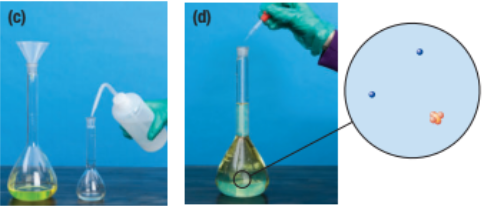

Preparing Dilutions
Callout
Dilution
Dilution is the process of reducing the concentration of a solution by adding more solvents. A familiar example of dilution is preparing orange juice from a can of frozen concentrate. This usually involves diluting the concentrate with three cans of water.


Preparing a dilute potassium chromate solution from concentrate (a) The concentrated potassium chromate solution in the small flask contains a relatively large quantity of dissolved solute per unit volume, giving the solution an intense yellow color. (b) The concentrated solution is added to the larger volumetric flask. (c) The small flask is rinsed with distilled water and the rinse water is transferred to the larger flask. (d) The concentrated solution is diluted to a larger volume by adding water. The dilute solution contains less solute per unit volume, so the color is less intense.


Select each item to learn more.
Volumetric Glassware
Dilutions often involve transferring precise volumes of a concentrated solution into another container. You have probably used a graduated cylinder to measure and transfer solutions. However, a graduated cylinder is not precise enough for analytical work involving small volumes. Instead, pipettes are used.
A volumetric pipette is used to deliver a fixed volume of solution. For example, a 10 mL volumetric pipette delivers 10.00 1/2 0.02 mL of solution. This type of pipette can deliver a range of volumes, from 0.1 mL to 10.0 mL. Note that the graduated pipette is not as precise as a volumetric pipette.

Dilution Calculations

During dilution, the amount (in moles) of solute present does not change. The concentration changes because the volume of the solution increases.
The amount of solution is n = cV We can use subscripts to differentiate between the two solutions: subscript “c” represents the initial concentrated solution, and subscript “d” represents the final diluted solution. We can therefore describe the amount of solute in the initial concentrated solution by the equation.

Example 1 :
What is the final concentration when 250 mL of a 16.0 mol/L nitric acid solution is diluted to 4.5 L?
Given :

Required :

Formula to be used : 
Step 1. If necessary, convert the volume of the solution to liters.

Step 2. Rearrange the concentration equation in the appropriate form. Then substitute in the values and solve the equation.


Statement:
The final concentration of the nitric acid solution is 0.89 mol/L.